Case 06 / Spatial experience
Shenzhen · 2025
Shenzhen · 2025
赛道即展台。
在与主机厂同馆的展会里，让一块展位成为可观看、可参与的赛道。从空间设计到模拟器与 VR 操控 RC 车，2 个月内完成设计、看场、搭建落地及互动流程开发。
- Timeline / 周期
- 2 个月内设计、看场、落地与互动流程开发
- Delivery / 现场
- 模拟器 + VR均可现场操控 RC 车；成为现场人流聚集区
- Budget / 投入
- 约 50 万元其中约 25 万元为场地、管理、水电等固定费用
项目成本为本人提供的项目口径。与同类项目通常约 100–200 万元的对比，属于项目经验估算，并非公开市场报价或第三方审计数据。
01 / Design proposal先把赛道，
先把赛道，
画进展台。
以环形赛道作为地面主视觉，结合桁架、赛车展示、模拟驾驶位与观众动线，形成从设计稿到现场可执行的空间方案。
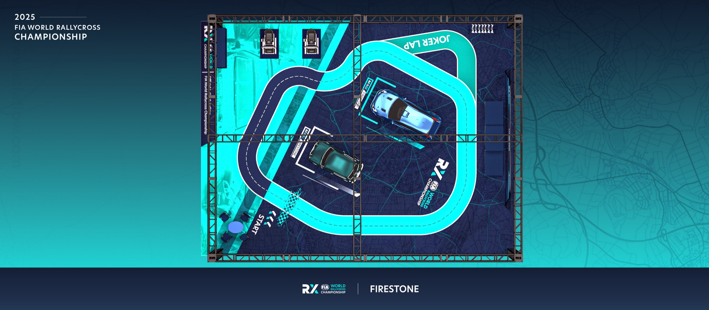
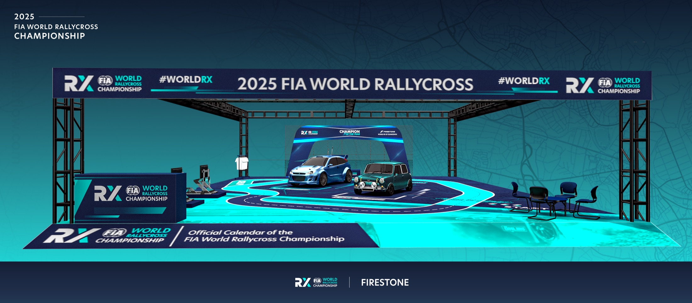
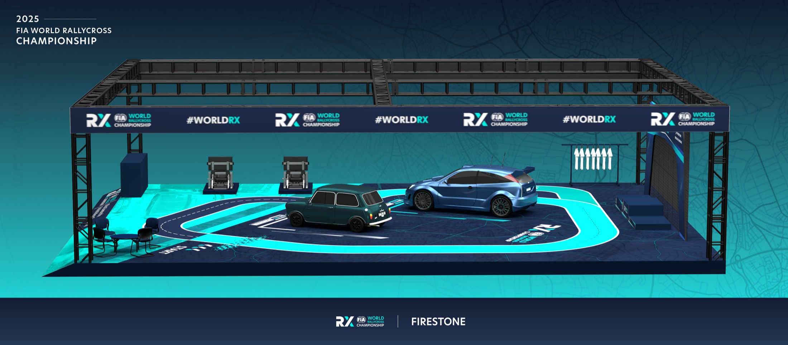
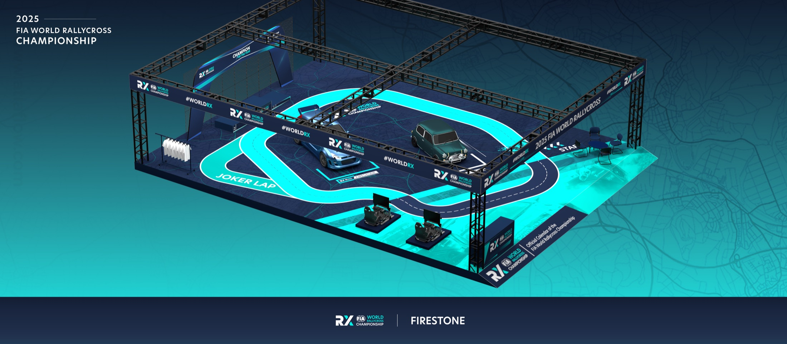
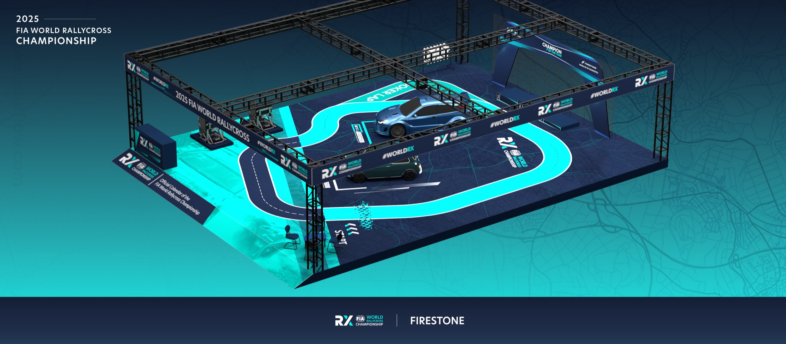
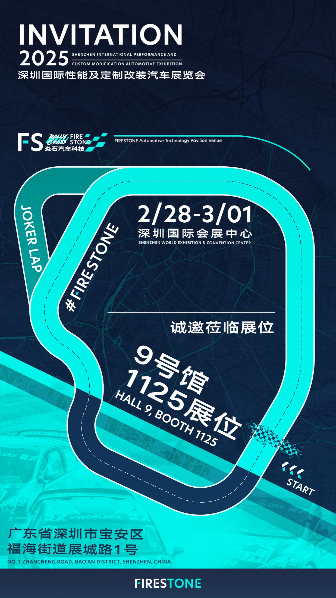
02 / On-site delivery从效果图，
从效果图，
到现场体验。
展台按方案落地。现场可通过模拟器或 VR 操控 RC 车，地面赛道让互动体验与视觉识别连为一体；展位成为同馆的流量聚集点。
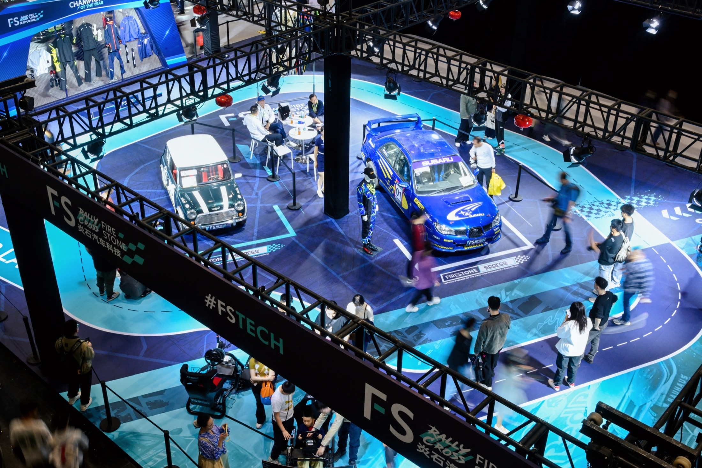
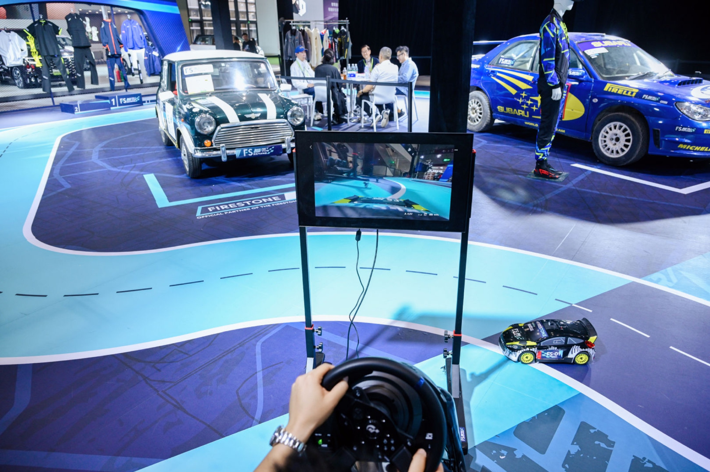
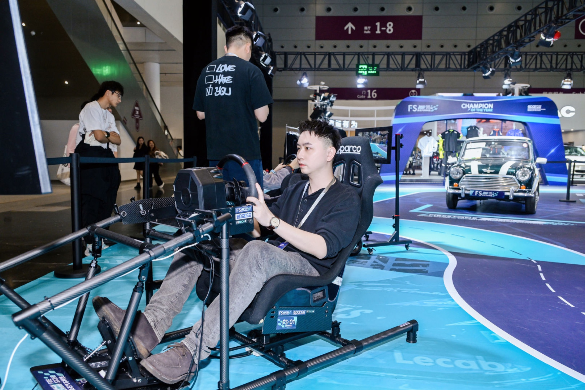
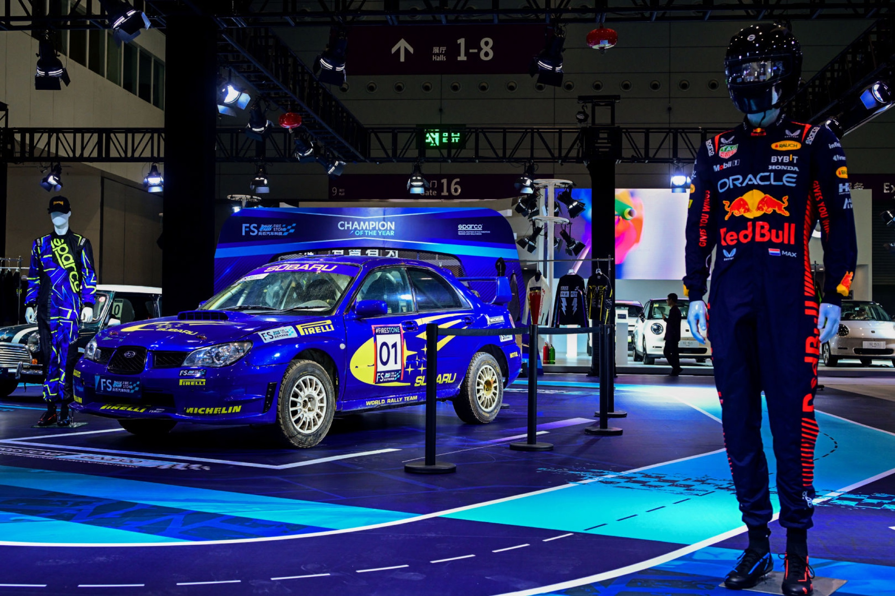
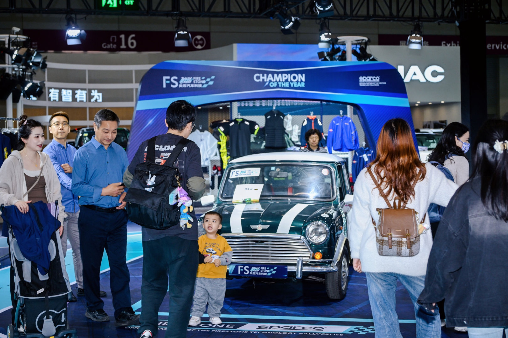